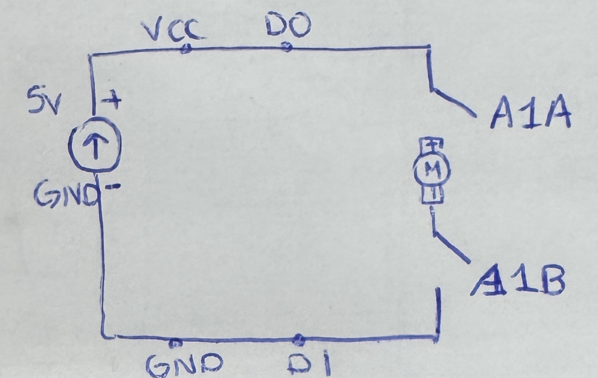

<div class="textcontainer">
<p class="margin"> </p>
<h3>Week 4: Microcontroller Programming</h3>
<h4>Assignment 1: Microcontroller video</h4>
Here is a video of my project. It is the same kinetic structure as last week, except
I added one piece of cardboard in front of the motor to stabilize it.
<video controls style="width: 200%; flex-shrink: 0; max-width: 400px;">
<source src="./sloth.mp4" type="video/mp4">
Your browser does not support the video tag. <a href="./sloth.mp4">Download the video</a> instead.
</video>
<h4>Assignment 2: Code Snippets</h4>
<a href='./week4_assignment copy.ino' download > Download my code </a> <br>
Here is my code. It allows the sloth to be controlled with 4 keywords: go, stop, faster and slower.
Go starts the sloth, stop stops the sloth and saves the speed for next time you go. Faster and slower
increment and decrement the speed respectively. When you hit the max speed for faster, it tells you and
just leaves the sloth at maximum speed. <br>
<button class="btn btn-primary" type="button" data-bs-toggle="collapse" data-bs-target="#codeCollapse" aria-expanded="false" aria-controls="codeCollapse">
Show Code
</button>
<div class="collapse mt-3" id="codeCollapse">
<pre><code>
const int A1A = D0; // define pin 12 for A-1A (PWM Speed)
const int A1B = D1; // define pin 14 for A-1B (direction)
// setting PWM properties
const int freq = 5000;
const int resolution = 8;
// other variables
bool get_user_command = true;
int current_speed = 0;
int previous_speed = 0;
void setup() {
Serial.begin(9600);
delay(500);
Serial.println();
Serial.println("--------------------------");
Serial.println("Starting...");
Serial.println();
pinMode(A1A, OUTPUT); // specify these pins as outputs
pinMode(A1B, OUTPUT);
ledcAttach(A1A, freq, resolution);
ledcWrite(A1A, 0); // start with the motors off
digitalWrite(A1B, LOW);
}
void loop() {
Serial.println("What should I do now?");
// if there is data afterwards
while(get_user_command) {
// wait for a command
if (Serial.available()) {
String command = Serial.readStringUntil('\n');
command.trim();
controlSlothSpeed(command);
get_user_command = false;
}
}
delay(100);
get_user_command = true;
Serial.println();
}
void controlSlothSpeed(String command) {
Serial.println(command);
// four commmands
if (command == "go") {
Serial.println("Sloth is moving!");
if (previous_speed == 0) { // only if it isn't moving set the default, otherwise just continue
current_speed = 200;
} else {
// Set the current speed to what we last left off
current_speed = previous_speed;
}
ledcWrite(A1A, current_speed);
}
else if (command == "stop") {
Serial.println("Sloth is stopping!");
// save the current speed
previous_speed = current_speed;
// make it stop
current_speed = 0;
ledcWrite(A1A, current_speed);
}
else if (command == "faster") {
Serial.println("Sloth is speeding up!");
current_speed += 10;
if (current_speed > 255) {
current_speed = 255;
Serial.println("You have achieved max sloth speed!");
}
ledcWrite(A1A, current_speed);
}
else if (command == "slower") {
Serial.println("Sloth is moving slower!");
current_speed -= 10;
ledcWrite(A1A, current_speed);
}
else {
Serial.println("The sloth WISHES it could do that, but alas, it cannot.");
}
}
</code></pre>
</div>
<br>
<h4>Assignment 3: Circuit Schematic</h4>
Here is my circuit schematic. It only goes in one direction because direction of the motor wasn't a part of my design.
<p></p> <br>
</div>